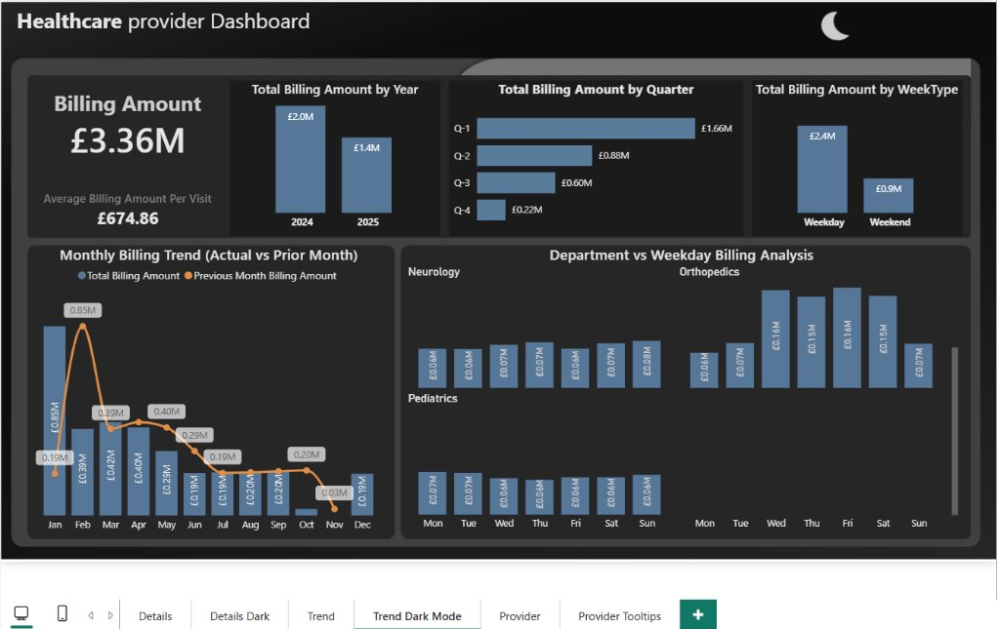
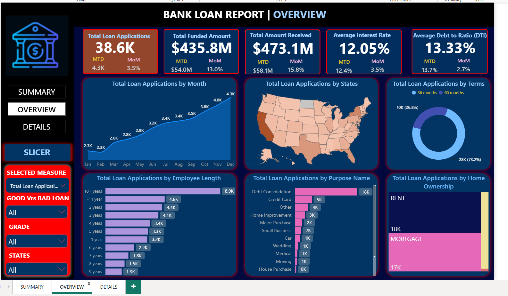
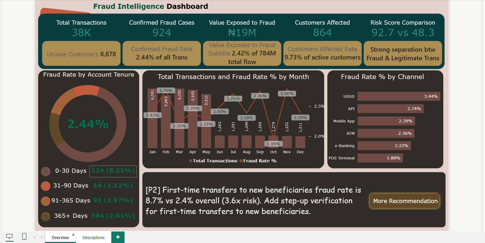
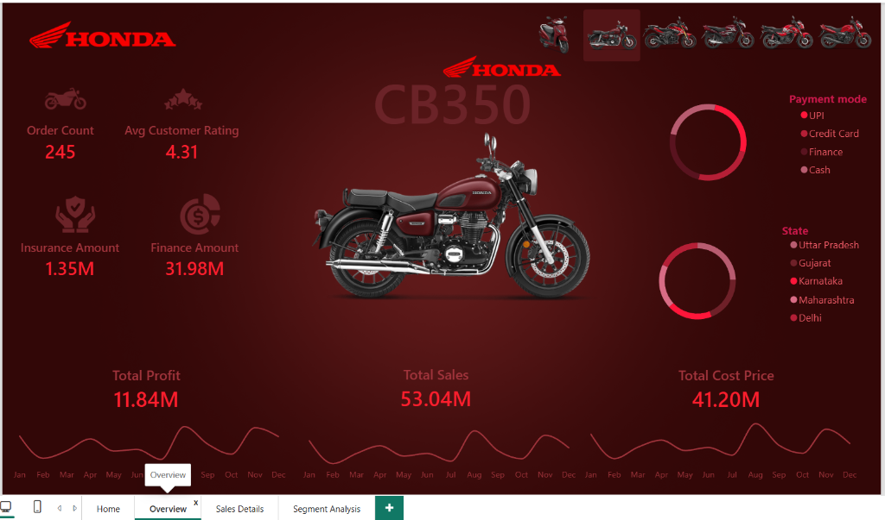
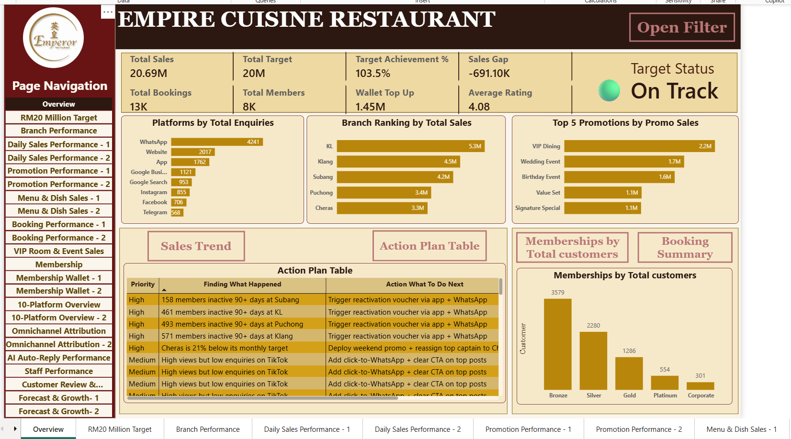

Translating Complex Enterprise Data into Executive Intelligence.
Specializing in Star/Snowflake Dimensional Modeling, DAX Time-Intelligence Frameworks, Advanced Relational SQL, and AI-Augmented Analytics (FastMCP + Claude).
Reconciled £3.36M in hospital gross billing across 5,000 inpatient encounters. Engineered DAX SUMX daily room charge iterators, patient length-of-stay (LOS) cohort modeling, and doctor KPI benchmarking.


Authored 35+ MySQL queries across 38K+ loan applications ($436M funded) to track MoM portfolio health, segment good loans (86%) from high-risk tranches, and uncover $28M in charged-off unrecovered debt.
Modeled 37.9K transactional logs into an enterprise forensic model using a custom FastMCP server + Claude AI. Audited foreign-IP logins producing a 25% fraud rate (10.2x uplift) for prioritized law-enforcement dispatch.


Multi-branch vehicle performance telemetry modeling across 1,200 electric transit vehicles. Engineered real-time battery degradation cycles, charging station dwell time distributions, and preventive maintenance triggers.
Engineered an Excel Power Pivot & Power BI Star Schema across 60,000+ orders ($307M revenue). Audited 606 SKUs and uncovered that 74% produced zero sales, reallocating procurement capital toward high-margin tiers.

Hands-on production proficiency across query languages, dimensional data warehouses, and modern AI engineering.
MySQL, PostgreSQL, Neon DB, SQL Server. CTEs, Window Functions, Complex Joins, Star & Snowflake Dimensional Schemas.
Power BI (DAX, Power Query, Field Parameters, Dynamic Tooltips), Microsoft Excel (Power Pivot, VBA), Tableau Desktop.
Python (Pandas, NumPy, Matplotlib, Seaborn), Model Context Protocol (FastMCP + Claude), Automated Forensic EDA.
Open to Data Analyst, BI Analyst & Analytics Specialist Roles.